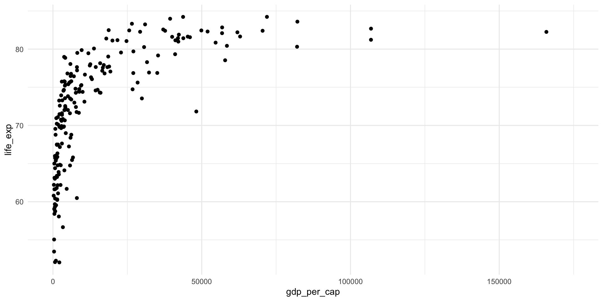
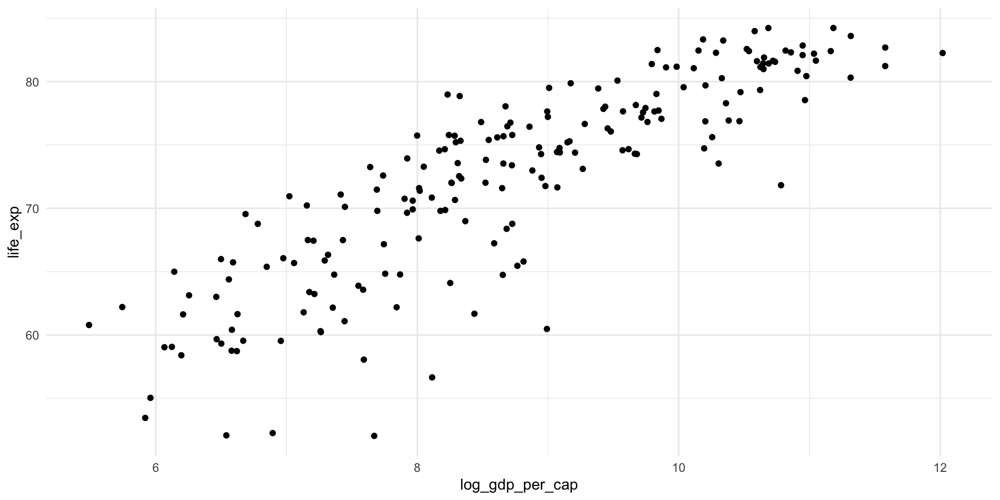
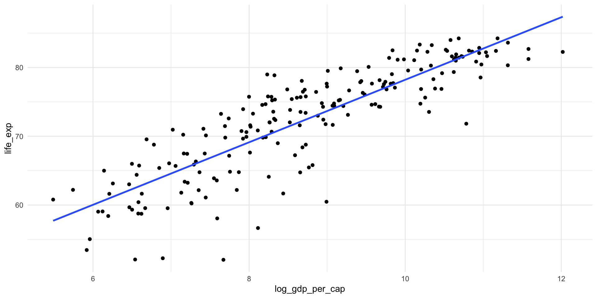
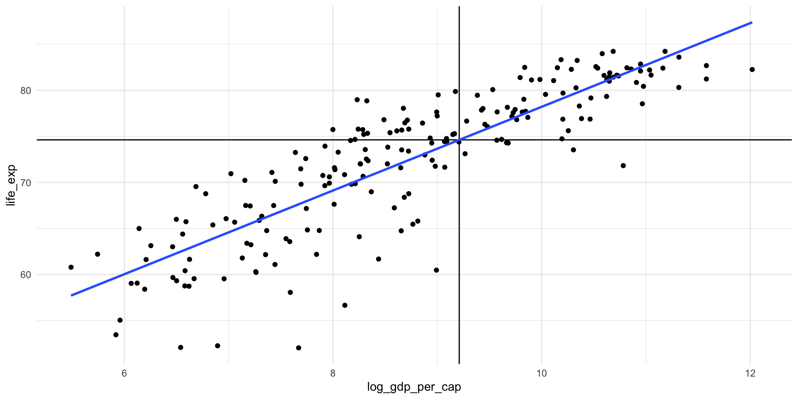
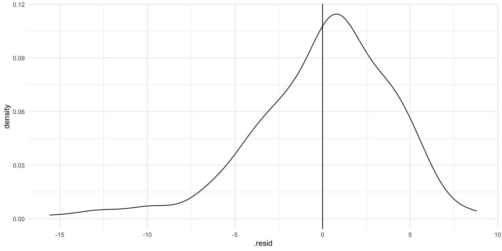
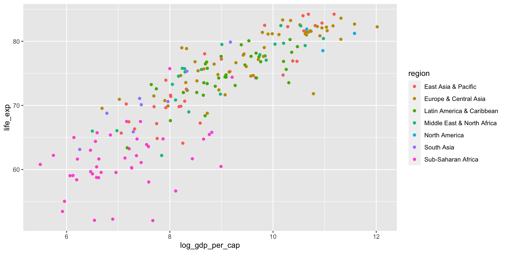
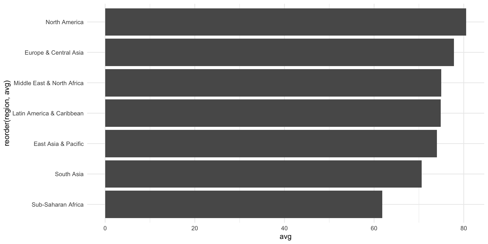
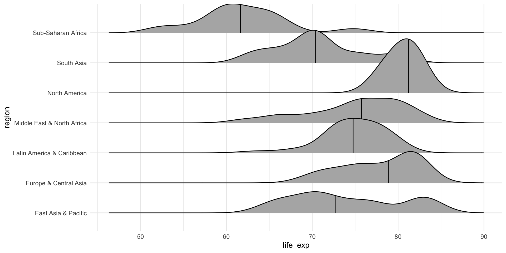

library(tidyverse)
library(wbstats)
library(countrycode)
library(broom)
library(janitor)
library(ggridges)Bivariate Relationships
Readings
Class slides
Section
Prerequisites
Today, we will explore the relationship between wealth and health. This question was made popular by Hans Rosling’s Gapminder project.
First, we need to collect our data. We will use wbstats::wb_data() to pull these data directly from the World Bank.
gapminder_df <- wb_data(
indicator = c("SP.DYN.LE00.IN", "NY.GDP.PCAP.CD"),
start_date = 2016,
end_date = 2016
) |>
rename(
life_exp = SP.DYN.LE00.IN,
gdp_per_cap = NY.GDP.PCAP.CD
) |>
mutate(
log_gdp_per_cap = log(gdp_per_cap),
region = countrycode(country, "country.name", "region", custom_match = c("Turkiye" = "Europe & Central Asia"))
) |>
relocate(region, .after = country)
gapminder_df# A tibble: 217 × 8
iso2c iso3c country region date gdp_per_cap life_exp log_gdp_per_cap
<chr> <chr> <chr> <chr> <dbl> <dbl> <dbl> <dbl>
1 AW ABW Aruba Latin… 2016 28451. 75.6 10.3
2 AF AFG Afghanistan South… 2016 520. 63.1 6.25
3 AO AGO Angola Sub-S… 2016 1710. 61.1 7.44
4 AL ALB Albania Europ… 2016 4124. 78.9 8.32
5 AD AND Andorra Europ… 2016 39932. NA 10.6
6 AE ARE United Arab Em… Middl… 2016 41055. 79.3 10.6
7 AR ARG Argentina Latin… 2016 12790. 76.3 9.46
8 AM ARM Armenia Europ… 2016 3680. 74.7 8.21
9 AS ASM American Samoa East … 2016 13301. NA 9.50
10 AG ATG Antigua and Ba… Latin… 2016 15863. 78.2 9.67
# ℹ 207 more rowsVisualizing bivariate relationships: two continuous variables
ggplot(gapminder_df, aes(x = gdp_per_cap, y = life_exp)) +
geom_point() +
theme_minimal()
There seems to be a very strong case that there is a relationship between a country’s GDP per capita (wealth) and its average life expectancy (health).
Because we want to explore linear relationships at this stage of the course, we will look at the logged GDP per capita variable:
ggplot(gapminder_df, aes(x = log_gdp_per_cap, y = life_exp)) +
geom_point() +
theme_minimal()
Visualizing the linear relationship between two continuous variables
ggplot(gapminder_df, aes(x = log_gdp_per_cap, y = life_exp)) +
geom_point() +
geom_smooth(method = "lm", se = F) +
theme_minimal()
We have started to unpack our estimated model for the linear relationship between a country’s (logged) GDP per capita and its average life expectancy.
\[ life Exp_x = \beta_0 + \beta_1 logGdpPerCap_x + \epsilon \]
Read this as: the life expectancy of some country, \(x\), is a function of some constant (\(\beta_0\)) and its logged GDP per capita transformed by some value \(\beta_1\) with some random error (\(\epsilon\)).
How do we calculate the constant (\(\beta_0\)) and \(\beta_1\)?
Estimating a linear model in R
m <- lm(life_exp ~ log_gdp_per_cap, data = gapminder_df)
tidy(m)# A tibble: 2 × 5
term estimate std.error statistic p.value
<chr> <dbl> <dbl> <dbl> <dbl>
1 (Intercept) 32.8 1.72 19.0 2.38e-46
2 log_gdp_per_cap 4.54 0.195 23.3 2.36e-58It’s all about the error! What line can I draw through all of my data points that minimizes the distance between the line and every data point? R has done this work for us.
Prediction
We can use this model to predict a country’s life expectancy given its GDP per capita.
What is the life expectancy for a country with a GDP per capita of $10,000? First, let’s find the estimated constant (or intercept or \(\beta_0\)).
m_res <- tidy(m)
beta_0 <- m_res |>
filter(term == "(Intercept)") |>
pull(estimate)
beta_0[1] 32.77775Then we need to find the estimated coefficient for (logged) GDP per capita:
beta_1 <- m_res |>
filter(term == "log_gdp_per_cap") |>
pull(estimate)
beta_1[1] 4.543066Finally, we can plug this in to our model:
life_exp_10000 <- beta_0 + beta_1 * log(10000)
life_exp_10000[1] 74.62093A country with a GDP per capita of $10,000 is predicted to have an average life expectancy of 75 years. Does this make sense with our data?
ggplot(gapminder_df, aes(x = log_gdp_per_cap, y = life_exp)) +
geom_point() +
geom_vline(xintercept = log(10000)) +
geom_hline(yintercept = life_exp_10000) +
geom_smooth(method = "lm", se = F) +
theme_minimal()
We can predict values from a model using broom::augment():
augment(m, newdata = tibble(log_gdp_per_cap = log(10000)))# A tibble: 1 × 2
log_gdp_per_cap .fitted
<dbl> <dbl>
1 9.21 74.6We can do this across a number of different values for GDP per capita:
new_data <- tibble(
gdp_per_cap = seq(from = 10000, to = 50000, by = 1000),
log_gdp_per_cap = log(gdp_per_cap)
)
augment(m, newdata = new_data)# A tibble: 41 × 3
gdp_per_cap log_gdp_per_cap .fitted
<dbl> <dbl> <dbl>
1 10000 9.21 74.6
2 11000 9.31 75.1
3 12000 9.39 75.4
4 13000 9.47 75.8
5 14000 9.55 76.1
6 15000 9.62 76.5
7 16000 9.68 76.8
8 17000 9.74 77.0
9 18000 9.80 77.3
10 19000 9.85 77.5
# ℹ 31 more rowsWe can also use this function to see how well our model predicts for our own data:
augment(m)# A tibble: 198 × 9
.rownames life_exp log_gdp_per_cap .fitted .resid .hat .sigma .cooksd
<chr> <dbl> <dbl> <dbl> <dbl> <dbl> <dbl> <dbl>
1 1 75.6 10.3 79.4 -3.75 0.0106 4.03 0.00471
2 2 63.1 6.25 61.2 1.94 0.0193 4.03 0.00234
3 3 61.1 7.44 66.6 -5.50 0.00886 4.02 0.00844
4 4 78.9 8.32 70.6 8.26 0.00541 3.99 0.0115
5 6 79.3 10.6 81.0 -1.70 0.0136 4.03 0.00125
6 7 76.3 9.46 75.7 0.569 0.00633 4.04 0.0000641
7 8 74.7 8.21 70.1 4.58 0.00566 4.02 0.00371
8 10 78.2 9.67 76.7 1.43 0.00719 4.03 0.000463
9 11 82.4 10.8 81.9 0.527 0.0154 4.04 0.000136
10 12 81.6 10.7 81.5 0.156 0.0145 4.04 0.0000113
# ℹ 188 more rows
# ℹ 1 more variable: .std.resid <dbl>Here, we have the predicted values for life expectancy for all of our countries in our sample. Compare .fitted (the predicted life expectancy) to life_exp (the actual observed average life expectancy).
m_eval <- augment(m) |>
transmute(
life_exp,
.fitted,
diff = life_exp - .fitted
)
m_eval# A tibble: 198 × 3
life_exp .fitted diff
<dbl> <dbl> <dbl>
1 75.6 79.4 -3.75
2 63.1 61.2 1.94
3 61.1 66.6 -5.50
4 78.9 70.6 8.26
5 79.3 81.0 -1.70
6 76.3 75.7 0.569
7 74.7 70.1 4.58
8 78.2 76.7 1.43
9 82.4 81.9 0.527
10 81.6 81.5 0.156
# ℹ 188 more rowsNote that broom::augment() does this calculation and stores it in the .resid variable.
augment(m) |>
transmute(
life_exp,
.fitted,
diff = life_exp - .fitted,
.resid
)# A tibble: 198 × 4
life_exp .fitted diff .resid
<dbl> <dbl> <dbl> <dbl>
1 75.6 79.4 -3.75 -3.75
2 63.1 61.2 1.94 1.94
3 61.1 66.6 -5.50 -5.50
4 78.9 70.6 8.26 8.26
5 79.3 81.0 -1.70 -1.70
6 76.3 75.7 0.569 0.569
7 74.7 70.1 4.58 4.58
8 78.2 76.7 1.43 1.43
9 82.4 81.9 0.527 0.527
10 81.6 81.5 0.156 0.156
# ℹ 188 more rowsPerformance
Is this the best model we can produce to predict life expectancy?
ggplot(augment(m), aes(x = .resid)) +
geom_density() +
geom_vline(xintercept = 0) +
theme_minimal()
Our model appears to be doing mildly well, with most predictions within one or two years of the observed value. However, some are as far away as 16 years! That’s quite a lot.
Can you see for which points these large differences exist?
ggplot(gapminder_df, aes(x = log_gdp_per_cap, y = life_exp)) +
geom_point() +
geom_smooth(method = "lm", se = F) +
theme_minimal()Does this model perform well? This depends a lot on the question you are asking.
Modelling the relationship between many variables
ggplot(gapminder_df, aes(x = log_gdp_per_cap, y = life_exp, colour = region)) +
geom_point()
Cross tabs
Does the average life expectancy vary by region?
xtabs(life_exp ~ region, data = gapminder_df)region
East Asia & Pacific Europe & Central Asia
2368.2936 4280.8130
Latin America & Caribbean Middle East & North Africa
2919.8775 1574.3790
North America South Asia
241.6661 564.8040
Sub-Saharan Africa
2967.2066 This is nice to visualise:
gapminder_df |>
group_by(region) |>
summarise(avg = mean(life_exp, na.rm = T)) |>
ggplot(aes(x = avg, y = reorder(region, avg))) +
geom_col() +
theme_minimal()
Or even better:
ggplot(gapminder_df, aes(x = life_exp, y = region)) +
stat_density_ridges(quantile_lines = T, quantiles = 2) +
theme_minimal()
Are these differences meaningful or significant? We will chat about that next week.